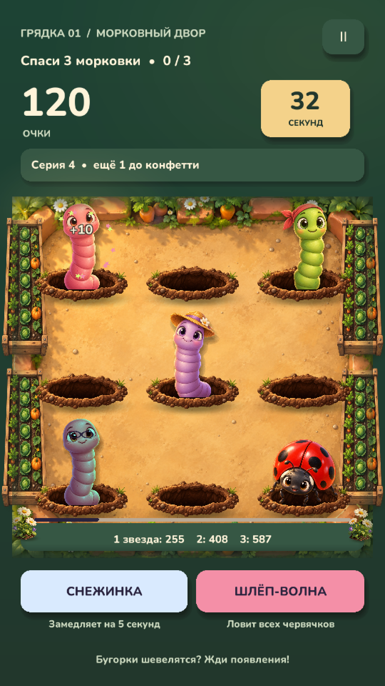
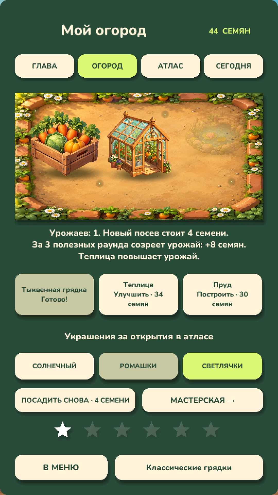
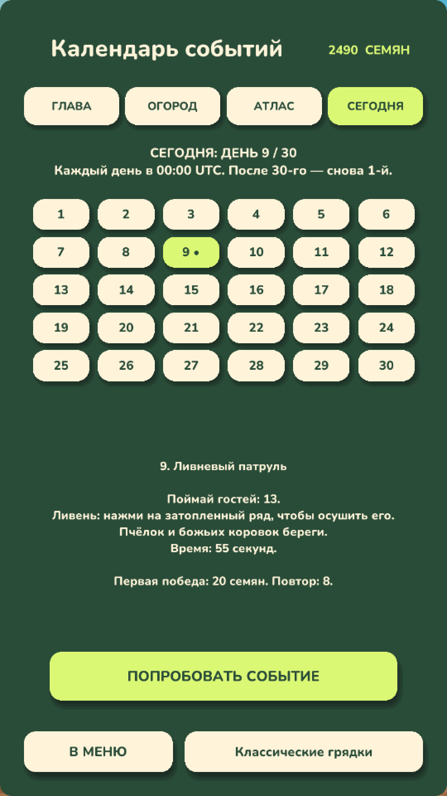

01 / ЛОВИ МОМЕНТ
У каждого свой трюк
Бронированные гости, улитки, кроты и ледяные червячки. Ночные вылазки, дождь и подземные маршруты меняют привычный ритм.
Из лунок выглядывают хитрые гости. Поймай момент, спаси урожай и преврати крошечную грядку в свой любимый сад.
Заглянуть в огородТелефон и планшет · Для игроков от 13 лет
Не каждого гостя нужно ловить. Сбей каску, дождись удобного момента, удержи крота — и не обижай полезных насекомых.

Бронированные гости, улитки, кроты и ледяные червячки. Ночные вылазки, дождь и подземные маршруты меняют привычный ритм.

Собирай семена, строй теплицу, сажай новый урожай и улучшай инструменты. Огород развивается благодаря игре.

Тридцать ежедневных событий сменяют друг друга по кругу. Открывай гостей в атласе, собирай медали и побей свой рекорд.
В Кубке огорода важны реакция и точность. Улучшения из приключения не дают преимущества в соревновании.
Для основных игровых режимов постоянное подключение не требуется. Интернет нужен для рекламы, онлайн-рейтинга и внешних ссылок.
В игре есть межстраничные объявления между раундами и добровольный просмотр видео за награду. Видео за награду запускается по нажатию игрока. Подробнее об обработке данных — в политике конфиденциальности.
События идут по циклу из 30 дней, затем цикл повторяется. Смена дня привязана к UTC и времени устройства.
Игра готовится к публикации в Google Play. Ссылка на страницу магазина появится здесь после выхода.
Укажи модель телефона и версию игры — так будет проще помочь.
Shaxhbanov@gmail.com